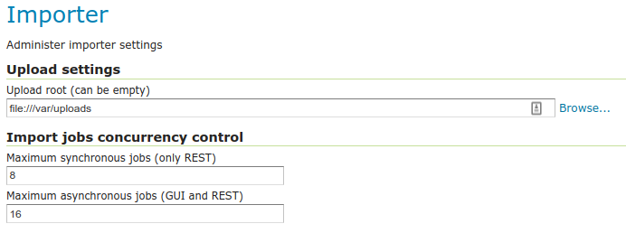

Configuring the Importer extension¶
The importer extension can be used without any explicit configuration, and by default it will:
Stage the REST uploads in a dedicated sub-folder of the data directory (
uploads).Pose no limit to the amount of concurrent imports executed.
It is however possible to configure the above using the “Importer” entry under the “Settings” menu:

The importer configuration menu entry¶
The configuration page looks as follows:
The importer configuration page¶
Entry |
Description |
|---|---|
Upload root |
The folder that will hold REST call uploads |
Maximum synchronous jobs |
How many synchronous jobs can be run in parallel. Synchronous jobs can only be run via the REST API. |
Maximum asynchronous jobs |
|
Previous: Installing the Importer extension